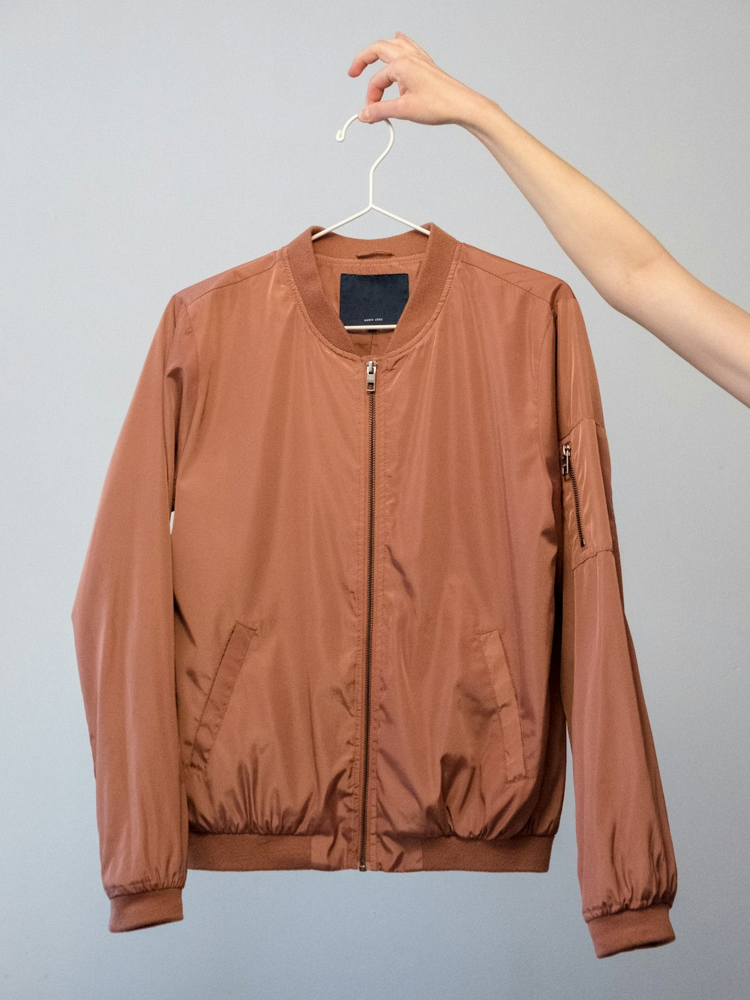

Aviation Treatise • 15 Min Read
B-3 Flight Jacket Shearling Aerodynamics
Thermodynamics of B-3 Heavy Bomber Jackets: High-Altitude Shearling Aerodynamics.
March 02, 2026
Read Monograph →

Aviation Treatise • 14 Min Read
RAF Irvin Flying Coat Tanning Physics
The RAF Irvin Flying Coat: Chrome-Free Vegetable Tanning & Lanolin Barrier Physics.
March 04, 2026
Read Monograph →

Aviation Treatise • 13 Min Read
Talon Military Brass Zipper Metallurgy
Talon No. 10 Brass Zippers & Heavyweight Hardware Metallurgy in Flight Outerwear.
March 06, 2026
Read Monograph →

Aviation Treatise • 16 Min Read
Steerhide vs Horsehide Tensile Telemetry
Vegetable-Tanned Steerhide vs Front-Quarter Horsehide: Tensile & Abrasion Telemetry.
March 08, 2026
Read Monograph →
Aviation Treatise • 14 Min Read
Shearling Collar Throat Latch Ergonomics
The Ergonomics of Double-Buckle Shearling Collars & Wind Turbulence Deflection.
March 10, 2026
Read Monograph →
Aviation Treatise • 15 Min Read
Aviation Leather Restoration & Conditioning
Archival Aviation Leather Conservation: Neat's-Foot Oil, Beeswax & Stitch Integrity.
March 12, 2026
Read Monograph →